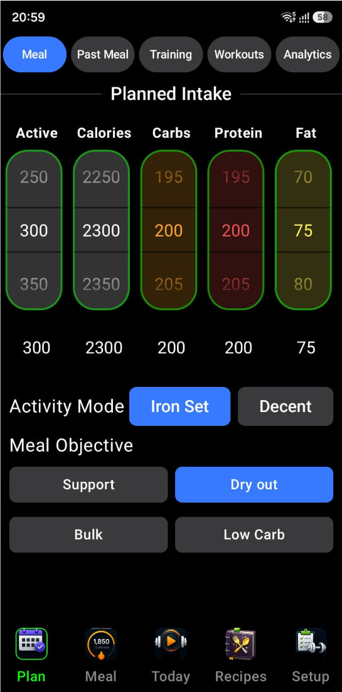
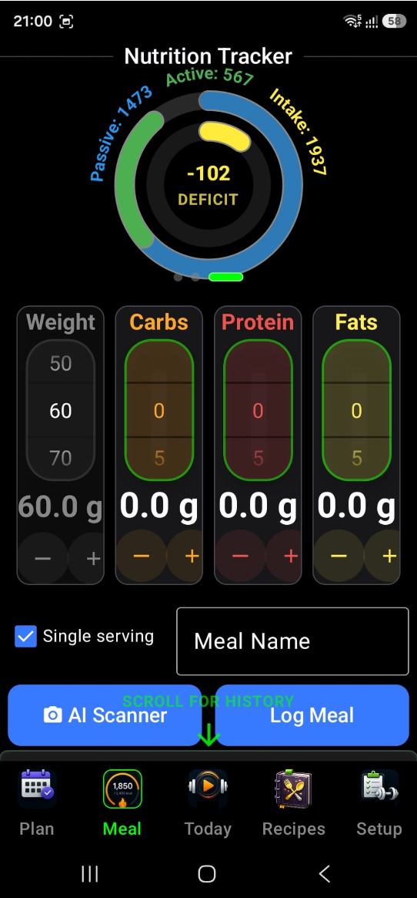
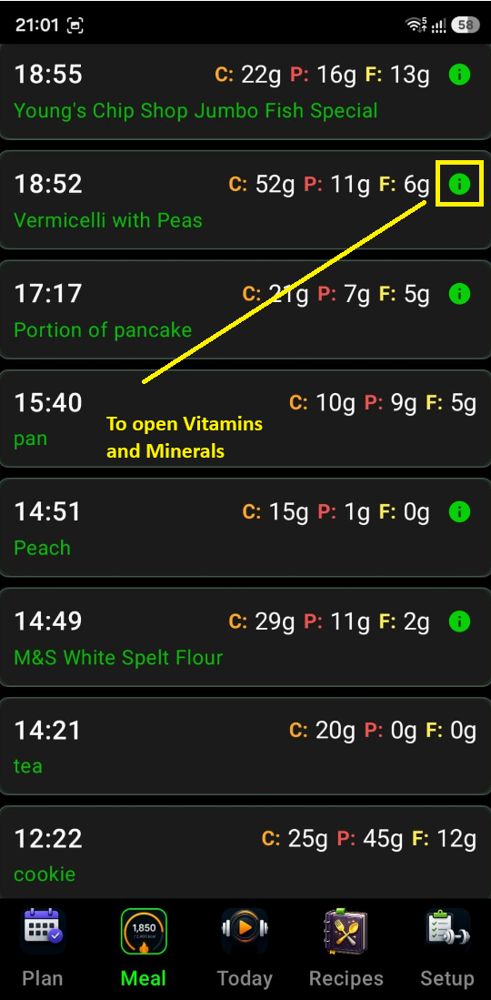
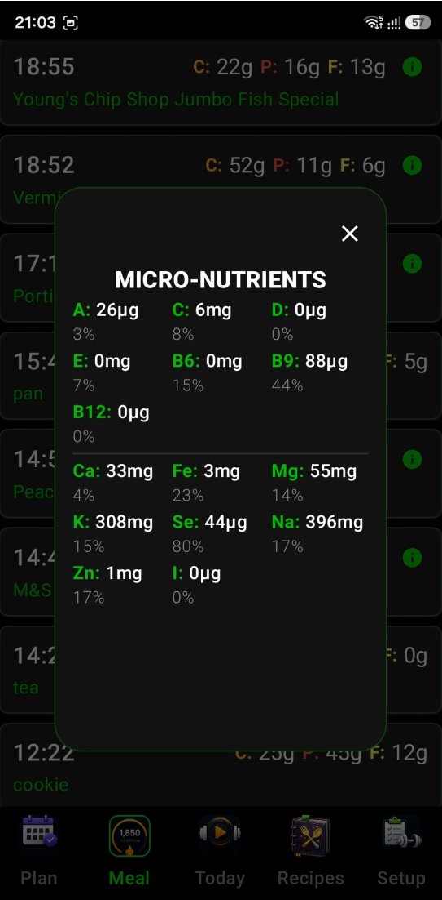
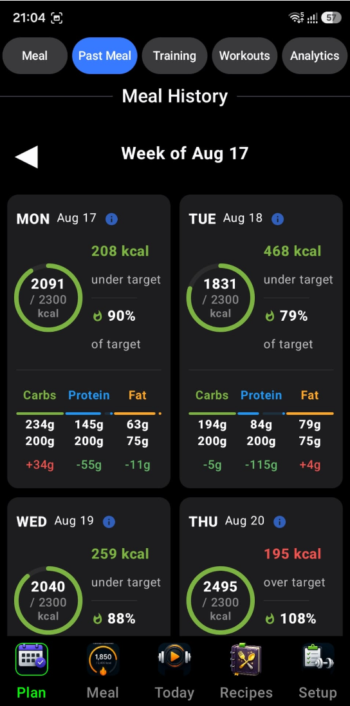

Turning your fitness goals into precise, science-based daily
targets. From live tracking to your long-term nutritional log
4.1 Nutrition Goals
The Nutrition Goals is your nutritional "control tower." It
allows you to set your daily caloric and macronutrient targets,
while automatically balancing them based on your physical
profile and fitness goals. Here is a detailed breakdown of its
functionality.
1 The Interactive Planning Sliders
At the top of the widget, you have five vertical sliders
that allow you to fine-tune your daily plan:
Active Calories — Set
how many calories you plan to burn through exercise
today.
Calories — Your total
daily energy intake goal.
Carbs, Protein, & Fat
— Specific gram targets for each macronutrient.
Active Cal
Calories
Carbs
Protein
Fat
These sliders are
"Smart." For example, if
you increase your "Active" calories, the widget uses your
profile (age, weight, height, gender) to automatically
adjust your "Total Calories" target to match your increased
energy needs.
2 Activity Modes
The widget allows you to toggle between two distinct
calculation modes that change how your targets are
generated:
Iron Set ModeHigh Performance
— Optimized for active individuals and athletes using
specific high-performance formulas.
Decent ModeStandard — A more
passive mode designed for maintenance or standard
lifestyle activity.
3 Meal Objectives
Below the sliders is a grid of objectives (e.g., "Mass
Gain," "Cutting," "Maintenance"). Selecting an objective
instantly re-calculates your macro targets.
Example: Switching to a "High Protein"
objective will automatically shift the Carbs/Fat sliders to
lower values and boost the Protein slider while keeping your
total calorie target stable.
4 Real-Time Nutrient Balancing
The widget ensures that your "Calories" and "Macros" stay in
sync. If you manually adjust the Protein slider, the widget
internally recalculates the energy balance. It ensures the
math always adds up so your plan is scientifically sound:
Protein & Carbs
4 kcal / g
Fat
9 kcal / g
5 Profile Integration
The widget is reactive to your user profile. Whenever you
update your weight, age, or gender in your profile settings,
this widget automatically refreshes its recommendations to
ensure your targets remain accurate for your current body
composition.
6 Tilt-to-Scroll
Like other parts of the IronSet interface, this widget
supports Tilt Interaction. If your hands are busy, you can
tilt your device to scroll through the planning options,
ensuring you can adjust your meal plan even in the middle of
a task.
🥗 Nutrition Goals — screen preview
In Summary
It's a dynamic calculator that turns your fitness goals into
specific, actionable nutritional targets, handling all the
complex math of BMR and macro-splitting in the background.

4.2 Nutrition Tracker
The Nutrition Tracker is your comprehensive nutrition and energy
metabolic dashboard. It's designed to track what you eat
(Intake) against what you burn (Output), providing a clear
picture of your daily energy balance. Here is a detailed
breakdown of its interface and functionality.
1 The Energy & Nutrition Pager
(Top)
The top section features a 4-page interactive carousel that
visualizes different aspects of your health:
Energy Balance (Calorie Rings)
— The most critical view. It shows three concentric
rings:
Outer Ring (Green/Blue)
— Your total calories burned, split into Passive
(what your body burns just staying alive/BMR)
and Active (exercise/movement).
Inner Ring (Red/Yellow)
— Your Calorie Balance. It visually displays if
you are in a Surplus (eating more than you burn)
or a Deficit (burning more than you eat).
Macro Progress —
Displays three rings (Orange for Carbs, Red for Protein,
Yellow for Fats) showing how close you are to your daily
targets.
Daily Summary Card — A
quick text-based summary of your Goal, BMR (Basal
Metabolic Rate), total Consumed calories, and the
remaining Balance for the day.
Micronutrients Tracker
— Tracks your intake of vitamins and minerals against
recommended targets.
Energy Balance
Carbs
Protein
Fats
2 The AI Food Scanner
Gemini AI
This is the "magic" button. By tapping AI Scanner, you can
take a photo of your meal. The app uses Google Gemini AI to:
Identify the food in the image.
Estimate the weight/portion size.
Automatically calculate the Carbs, Protein, and Fats.
Suggest a meal name and populate the inputs for you,
saving you from manual data entry.
3 Precision Manual Logging
If you prefer manual entry or need to tweak the AI's
results, the widget provides high-precision controls:
Vertical Macro Sliders
— Four dedicated sliders for Weight (grams), Carbs,
Protein, and Fats. Slide your finger to adjust values
quickly or use the + and − buttons for single-gram
precision.
Portion Control — A
"Single Serving" toggle allows you to quickly switch
between logging a specific weight in grams or a standard
"one serving" unit.
Meal Identity — A text
field to name your meal (e.g., "Post-Workout Shake") so
you can recognize it in your history.
4 Interactive Feedback & Hints
Visual Laps — The
rings support "Multiple Laps." If you exceed your goal
(e.g., eat 150% of your protein target), the ring will
start a second, darker-colored lap to show you've gone
above and beyond.
Guided Navigation —
The app uses pulsing green arrows to remind you that you
can swipe horizontally for more data or scroll down to
see your history.
Logging Confirmation —
When you tap Log Meal, the data is instantly saved to
your history and the top rings update in real-time to
reflect your new totals.
5 Meal History
(Bottom)
Scrolling down reveals a chronological list of everything
you've eaten today. This allows you to review your choices,
see the specific breakdown of past meals, and stay
accountable to your plan.
6 Tilt Navigation
Just like the workout widgets, the Energy Widget supports
Tilt Interaction. You can tilt your phone to scroll through
your meal history or adjust values, keeping the interface
accessible even when you're busy in the kitchen.
🍽️ Nutrition Tracker — screen preview



In Summary
The Energy Widget is a "Metabolic Command Center" that
bridges the gap between AI-powered convenience and
athlete-grade nutritional tracking.
4.3 Meal History
The Meal History widget provides a weekly grid view of your
caloric intake, allowing for easy navigation between past and
current weeks to ensure consistency. It is your long-term
nutritional log, designed to give you a clear overview of your
eating habits across weeks and days. It transforms raw meal data
into a structured, navigable calendar. Here is a detailed
breakdown of its interface and functionality.
1 Week-Based Navigation
At the top of the widget, you'll find a navigation bar that
organizes your history by week:
Weekly View — It
displays a label such as "Week of Oct 21," showing you
exactly which 7-day period you are viewing.
Jump Between Weeks —
You can use the ◀ and ▶ arrows to browse previous weeks.
The interface is smart — it won't let you navigate into
the future (beyond the current week).
Automatic Focus —
Whenever you open a week that includes the current day,
the widget automatically scrolls to "Today" so you don't
have to search for your most recent entries.
◀Week of Oct 21▶
2 The Daily History Grid
The heart of the widget is a two-column grid that displays
Meal Day Cards:
Visual Summary — Each
card represents a single day. It shows the date and a
summary of the meals consumed on that day.
Data Accuracy — It
pulls directly from your meal history, ensuring that
every snack or meal you've logged (manually or via AI)
is accounted for.
Empty States — If you
didn't log anything on a specific day, the card remains
as a placeholder, helping you identify gaps in your
tracking.
Mon, Oct 21
3 meals · 2,140 kcal
Tue, Oct 22
4 meals · 2,310 kcal
Wed, Oct 23
No meals logged
Thu, Oct 24 · Today
2 meals · 1,180 kcal
3 Integrated Tilt Interaction
Consistent with the rest of the IronSet experience, this
widget is optimized for hands-free use:
Tilt-to-Scroll — You
can scroll through your weekly grid simply by tilting
your phone. The application uses your device's sensor
data and translates your physical movement into smooth
vertical scrolling, which is particularly useful if you
are reviewing your history while multi-tasking.
4 Technical Intelligence
Smart Grouping — The
widget automatically handles the complex logic of
grouping individual meal timestamps into their
respective calendar days based on your local time zone.
State Persistence — It
uses run-time persistence for your current week
selection, meaning if you navigate away from the widget
and come back, it remembers exactly which week you were
looking at.
📅 Meal History — weekly grid preview

In Summary
While the Energy Widget is for "right now," the Meal History
Widget is for "the big picture." It allows you to spot
patterns in your nutrition over time and ensures that your
hard work in logging is presented in a clean, professional,
and easily accessible way.